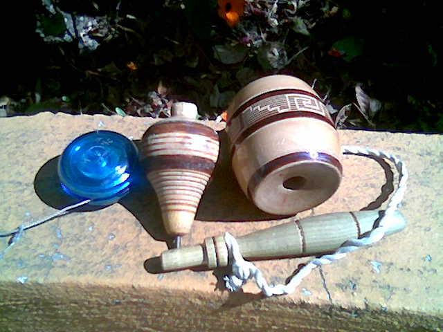

The Old Shelf / Mexico / Trompo and balero
Yo-yo, trompo, balero
Mexico
Trompo and balero
not dated
One photograph shows all three. The file does not name a country.
Stills only.

A yo-yo, a spinning top (trompo), and a balero in one picture. The file calls them typical juggling toys and does not name a country.
Charly genio. Public domain. Source page